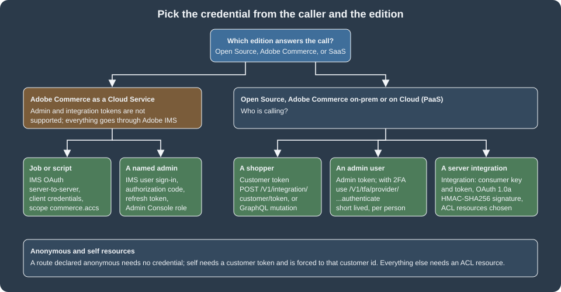

API Authentication
|
This content was generated with the assistance of AI and should be verified against the official documentation before being relied on in production. |
Every Magento REST and GraphQL request is evaluated by the same question: who is calling, and may they use this route? The
first half is authentication, which this page covers; the second half is the route’s resources declaration in
webapi.xml (anonymous, self or an ACL resource, see
REST and GraphQL APIs). Magento has four kinds of caller and a
credential for each: a customer gets a customer token, an admin user gets an admin token (and must pass two-factor
authentication), a server-side integration gets consumer credentials and an access token that it uses to sign requests
with OAuth 1.0a, and on Adobe Commerce as a Cloud Service everyone is authenticated by Adobe IMS. Pocket Coffee uses
three of them: shoppers (Ada, a Coffee Club customer), the shop owner’s scripts, and an ERP integration that writes roast
batches.
The page was checked on 2026-10-27 against Magento 2.4.9 (released 2026-05-12) and the Adobe documentation. The examples
ran on Mage-OS 3.6.0 (based on 2.4.9, PHP 8.5.12, developer mode) in a local Docker store with the
PocketCoffee_Api module of the REST page; Mage-OS differs from Adobe’s release in places that are called out. The
local store has the Magento_TwoFactorAuth module disabled, as is usual in development, so the 2FA flow is described
from the module’s source and the documentation and was not run; section What was run and what was not lists what
was and was not. The edition rules: customer, admin and integration tokens and OAuth 1.0a apply to Magento Open Source,
Adobe Commerce on-premises and Adobe Commerce on Cloud (PaaS); Adobe IMS administration sign-in is Adobe Commerce PaaS
only; and Adobe Commerce as a Cloud Service (SaaS) does not support the traditional admin and integration token methods at
all.

The credentials at a glance
| Credential | Obtained with | Lifetime | Typical caller |
|---|---|---|---|
Customer token |
|
JWT, 60 minutes by default (observed); revocable |
A storefront, a mobile app, a script acting for one shopper |
Admin token |
|
JWT, 60 minutes by default (observed) |
A person’s script or tool, acting as an admin user |
Integration access token and secret |
Created when an integration is activated in the Admin (or by the OAuth handshake) |
Until revoked or the integration is reauthorized or deleted |
A server integration (ERP, PIM, marketplace connector) |
IMS access token |
Adobe Developer Console credentials against |
24 hours by default |
Everything on Adobe Commerce as a Cloud Service; admin REST on PaaS when IMS sign-in is enabled |
No credential |
Routes whose |
n/a |
A guest, a public catalog read |
The Adobe token page states default lifetimes of 4 hours for admin and 1 hour for customer tokens, set under Stores > Settings > Configuration > Services > OAuth > Access Token Expiration. The two numbers describe the older opaque tokens. The OAuth configuration page now says that the lifetime and the encryption algorithm of bearer customer and admin tokens are controlled by the JWT Authentication settings of the Magento Web API configuration, and that is what the test store did (see below): the tokens it issued lived 3,600 seconds, both for customers and for the admin.
Customer tokens
A customer token is obtained by posting the customer’s e-mail and password. The response body is the token as a JSON string.
curl -s -X POST http://localhost:8082/rest/V1/integration/customer/token \
-H 'Content-Type: application/json' \
-d '{"username":"ada@example.test","password":"<customer-password>"}'
# "eyJraWQiOiIxIiwiYWxnIjoiSFMyNTYifQ.eyJ1aWQiOjIsInV0eXBpZCI6MywiaWF0IjoxNzkzMTIwMTU5LCJleHAiOjE3OTMxMjM3NTl9.<signature>"
curl -s http://localhost:8082/rest/V1/customers/me -H "Authorization: Bearer ${CUSTOMER_TOKEN}"
# {"id":2,"group_id":1,"email":"ada@example.test","firstname":"Ada","lastname":"Lovelace", ...}The GraphQL equivalent is the generateCustomerToken mutation, and the token goes in the same header:
mutation {
generateCustomerToken(email: "ada@example.test", password: "<customer-password>") {
token
}
}With the header Authorization: Bearer <token> a { customer { firstname email } } query returned Ada’s data; without
the header the same query answered The current customer isn't authorized. with category graphql-authorization and
HTTP 200. Customer-scoped operations (the cart, addresses, orders) need the token; the catalog does not. GraphQL
can also use the session cookie, which is why Adobe recommends tokens and, since 2.4.5, lets a store disable GraphQL
sessions with bin/magento config:set graphql/session/disable 1; mixing cookies and tokens in one client can cause
trouble. A support agent can obtain a customer token for remote shopping assistance with generateCustomerTokenAsAdmin,
provided the customer allowed it.
What is inside the token
In this build the tokens are JWTs signed with HS256, issued by the Magento_JwtUserToken module. Decoding the two
first parts of a customer token and of the admin token gave:
{"kid": "1", "alg": "HS256"}
{"uid": 2, "utypid": 3, "iat": 1793120159, "exp": 1793123759}uid is the customer id and utypid the user type (2 admin, 3 customer; integrations are type 1); exp - iat was
3,600 for both customers and the admin. A stateless token has a problem that Magento solves with a table: nothing in the
token can be cancelled, so revoking a user’s tokens writes a row in jwt_auth_revoked (user_type_id, user_id,
revoke_before), and every token of that user issued before revoke_before is rejected. The JWT settings are in
Stores > Configuration > Services > Magento Web API > JWT Authentication.
| Setting | Default | Meaning |
|---|---|---|
|
|
Signing or encryption algorithm. The Mage-OS source accepts the signing algorithms HS256, HS384 and HS512 (a JWS) and the key-wrapping algorithms A128KW, A192KW, A256KW, A128GCMKW, A192GCMKW and A256GCMKW (a JWE) |
|
|
Content encryption algorithm used when a JWE algorithm is selected (A128GCM, A192GCM, A256GCM, A128CBC-HS256, A192CBC-HS384 or A256CBC-HS512) |
|
60 (minutes) |
Customer token lifetime |
|
60 (minutes) |
Admin token lifetime |
A value of 0 or a negative one falls back to 30 minutes in the code. In the test store these values are locked
(config:set answered "The value you set has already been locked"), so changing the expiry was not run; to change
a locked value use config:set --lock-env or --lock-config, which writes it to env.php or config.php.
Revoking
A customer revokes their own token with POST /V1/integration/customer/revoke-customer-token (a route with self and a
forced %customer_id%), and GraphQL has revokeCustomerToken. Both were run: the REST route answered true, the same
token was then refused with 401 (The consumer isn't authorized to access %resources.), and the GraphQL call afterwards
answered User token has been revoked. A site should call the revoke endpoint when a customer logs out or changes the
password. The integration module has no REST route for revoking an admin token (its webapi.xml declares only the
admin and customer token routes and the customer revoke route); an admin token ends by expiry, by deactivating the admin
user, or by the PHP method AdminTokenServiceInterface::revokeAdminAccessToken(), which the Admin calls.
Lockout
Failed token requests are counted per account. The defaults are declared in the config.xml of Magento_Integration:
oauth/authentication_lock/max_failures_count is 6 and oauth/authentication_lock/timeout is 1800 seconds. On a
throw-away customer, seven requests with a wrong password and then one with the right password all answered 401 with the
same text, The account sign-in was incorrect or your account is disabled temporarily. Please wait and try again
later., which is deliberate: the message does not reveal whether the e-mail exists or whether the account is locked.
The counters live in oauth_token_request_log; the test rows were deleted afterwards. A hourly cron job
(expired_tokens_cleanup) deletes expired opaque tokens and a per-minute one
(outdated_authentication_failures_cleanup) the old failure records.
Admin tokens and two-factor authentication
With 2FA disabled, an admin token is the same exchange as for customers, with the admin user’s name and password:
curl -s -X POST http://localhost:8082/rest/V1/integration/admin/token \
-H 'Content-Type: application/json' \
-d '{"username":"admin","password":"<admin-password>"}'An admin token carries the permissions of the admin’s role, so a call succeeds only if the role allows the route’s resource. There is no GraphQL mutation that creates an admin token: the Adobe page says to obtain it from REST, and admin tokens are needed in GraphQL only for staged content (an Adobe Commerce feature) and for resolvers that check them, like the roast batch mutation of the previous page.
With 2FA
Two-factor authentication is part of Open Source and Adobe Commerce (module Magento_TwoFactorAuth) and is on for
every admin login unless the module is disabled or Adobe IMS sign-in replaces it. With it on, the plain admin-token route
no longer returns a token. The module re-declares POST /V1/integration/admin/token (service
Magento\TwoFactorAuth\Model\AdminAccessTokenService) and, after checking the user name and password, always throws one of
three messages (read from the source):
-
Please use the 2fa provider-specific endpoints to obtain a token.(with the list of the user’s active providers) when the user already configured 2FA. -
Please ask an administrator with sufficient access to configure 2FA firstwhen no provider is assigned to the user. This exact message was observed on Mage-OS 3.6.0 with the module enabled, before it was disabled for development. -
You are required to configure personal Two-Factor Authorization in order to login. Please check your email.when providers are assigned but the user has not set one up; the module e-mails the user a configuration link.
The token is obtained from the route of the provider the user configured:
| Provider | Routes (POST, all anonymous) |
Notes |
|---|---|---|
Google Authenticator |
|
|
Duo Security |
|
The Adobe token page writes the path as |
Authy |
|
Several calls are needed: send a token by SMS or call, or a OneTouch approval |
U2F key |
|
A WebAuthn challenge; the challenge domain is a configuration setting |
The tfaToken is the value of the :tfat placeholder in the e-mail that Magento sends for the first configuration;
the Admin setting "Configuration Email URL for Web API" lets a custom integration receive that link. Other 2FA
administration routes under /V1/tfa/ read and set a user’s providers (installed-providers, forced-providers,
user-providers/:userId, default-provider-code/:userId) and are protected routes. The 2FA configuration settings
(providers to use, Google’s OTP window of 29 seconds, the retry limit of 10 attempts and the lockout of 300 seconds) are
in Stores > Settings > Configuration > Security > 2FA. The consequences for automation: a script that must act as an
admin user needs the user’s OTP secret, which defeats the purpose of 2FA, so unattended jobs should use an integration
instead. Disabling the module (bin/magento module:disable Magento_TwoFactorAuth) is a convenience for local
development and test stores; the Adobe 2FA documentation does not describe it, and a production store should never do it.
Integrations and OAuth 1.0a
An integration is a non-human API client with its own set of ACL resources. It is created in the Admin under System >
Extensions > Integrations > Add New Integration with a name, a contact e-mail, an optional Callback URL (where
credentials are posted), an optional Identity link URL (where the merchant is sent to log in to the third-party
service), and, on the API tab, Resource Access set to All or to Custom with a resource tree. A new integration is
Inactive. Clicking Activate and then Allow creates four secrets and shows them once: the consumer key and
consumer secret (identify the application) and the access token and access token secret (identify the
authorisation). Reauthorize replaces the access token pair; delete removes the integration. A module can also predefine
an integration with files under etc/integration/ (the XSDs api.xsd and config.xsd ship with Magento_Integration);
that route was not run.
For Pocket Coffee the ERP integration PocketCoffee ERP gets exactly the resources it needs: products (read) and the
PocketCoffee_Api::roast_batches_manage resource of the REST page. The Admin does what the following PHP does; the script
was run in the test store (with the throw-away PocketCoffee ERP integration) to create the integration without a browser:
<?php
use Magento\Framework\App\Bootstrap;
require '/var/www/html/app/bootstrap.php';
$bootstrap = Bootstrap::create(BP, $_SERVER);
$om = $bootstrap->getObjectManager();
$om->get(\Magento\Framework\App\State::class)->setAreaCode('adminhtml');
$service = $om->get(\Magento\Integration\Api\IntegrationServiceInterface::class);
$integration = $service->create([
'name' => 'PocketCoffee ERP', 'email' => 'erp@example.test', 'endpoint' => '', 'setup_type' => 0,
]);
// grant the resources; every parent of a resource has to be listed as well, as the Admin tree does
$om->get(\Magento\Integration\Api\AuthorizationServiceInterface::class)->grantPermissions(
$integration->getId(),
[
'Magento_Backend::admin', 'Magento_Catalog::catalog', 'Magento_Catalog::catalog_inventory',
'Magento_Catalog::products', 'PocketCoffee_Api::roast_batches', 'PocketCoffee_Api::roast_batches_manage',
]
);
$oauth = $om->get(\Magento\Integration\Api\OauthServiceInterface::class);
$oauth->createAccessToken($integration->getConsumerId(), true);
// the integration works only once it is active: this is what the Activate button sets
$integration->setStatus(\Magento\Integration\Model\Integration::STATUS_ACTIVE)->save();Two pitfalls showed up while writing this script. First, granting only Magento_Catalog::products (without its parents
Magento_Backend::admin, Magento_Catalog::catalog and Magento_Catalog::catalog_inventory) left every call at 401
with The consumer isn't authorized to access %resources.; the ACL tree is hierarchical. Second, an integration that was
created but not activated had the same effect even with the right permissions. The message names the missing resource
(Magento_Catalog::products), which is the fastest way to debug a permission set.
Two-legged: signed requests with the four secrets
The tokens an integration receives are not bearer tokens. By default an integration access token cannot be used
alone in an Authorization: Bearer header; the request has to be signed with OAuth 1.0a using all four secrets
(HMAC-SHA256, or HMAC-SHA1 which the framework still accepts). The Adobe page says that restoring standalone bearer use is
possible but not recommended, through Stores > Configuration > Services > OAuth > Consumer Settings > "Allow OAuth Access
Tokens to be used as standalone Bearer tokens" or bin/magento config:set oauth/consumer/enable_integration_as_bearer 1.
On the test store, the integration’s access token as a bearer token answered 401; with the setting at 1 it answered 200;
after setting it back to 0 it answered 401 again (the value was restored).
The signature is computed over a base string made of the HTTP method, the URL without its query, and the sorted,
percent-encoded OAuth and query parameters, each joined with &. The signing key is the consumer secret and the token
secret joined by &. This signer was run against the store (secrets from the environment, never in code):
import base64, hashlib, hmac, os, secrets, time, urllib.parse, urllib.request
enc = lambda s: urllib.parse.quote(str(s), safe="~")
def authorization_header(method, url):
params = {
"oauth_consumer_key": os.environ["MG_CONSUMER_KEY"],
"oauth_nonce": secrets.token_hex(16),
"oauth_signature_method": "HMAC-SHA256",
"oauth_timestamp": str(int(time.time())),
"oauth_token": os.environ["MG_TOKEN"],
"oauth_version": "1.0",
}
parts = urllib.parse.urlsplit(url)
query = urllib.parse.parse_qsl(parts.query, keep_blank_values=True)
normalized = "&".join(f"{enc(k)}={enc(v)}" for k, v in sorted(list(params.items()) + query))
base = "&".join([method.upper(), enc(f"{parts.scheme}://{parts.netloc}{parts.path}"), enc(normalized)])
key = f"{enc(os.environ['MG_CONSUMER_SECRET'])}&{enc(os.environ['MG_TOKEN_SECRET'])}"
params["oauth_signature"] = base64.b64encode(hmac.new(key.encode(), base.encode(), hashlib.sha256).digest()).decode()
return "OAuth " + ", ".join(f'{k}="{enc(v)}"' for k, v in sorted(params.items()))
url = "http://localhost:8082/rest/V1/pocketcoffee/roast-batches"
body = b'{"batch":{"sku":"PC-ETH-WHL-1KG","roast_date":"2026-10-26"}}'
request = urllib.request.Request(url, data=body, method="POST",
headers={"Authorization": authorization_header("POST", url),
"Content-Type": "application/json"})
print(urllib.request.urlopen(request).read().decode())
# {"sku":"PC-ETH-WHL-1KG","roast_date":"2026-10-26"}Observed results with the signer: a signed GET /V1/products with the granted resource answered 200 ({"total_count":21});
the signed POST of the roast batch answered 200; a signed GET /V1/store/websites answered 401 naming
Magento_Backend::store, which the integration was not granted; a wrong token secret answered 401 The signature is
invalid. Verify and try again.; and sending the same signed header a second time answered 401 The nonce is already
being used by the consumer with ID %1 (the nonce and timestamp prevent replay, so generate a fresh header for every
call). The timestamp must also be recent; the consumer setting oauth/consumer/expiration_period (300 seconds by
default) governs how long an unused key and secret stay valid after an exchange begins.
Three-legged: the activation handshake
When the integration has a Callback URL, activation runs the full OAuth handshake instead of showing the secrets in the Admin. The Adobe page describes the sequence and a local run reproduced it:
-
Magento creates a verifier and posts
oauth_consumer_key,oauth_consumer_secret,store_base_urlandoauth_verifierto the Callback URL. The run used a throw-away listener on the host athttp://host.docker.internal:8099/callbackand received all four values (32 characters each). -
The application asks for a request token with
POST /oauth/token/request, signed with the consumer key and the consumer secret only. The answer isoauth_tokenandoauth_token_secret(request token, short lived). -
The application exchanges it with
POST /oauth/token/access, signed also with the request token and its secret, and sending theoauth_verifierit received in step 1. The answer is the accessoauth_tokenandoauth_token_secret, which do not expire unless the merchant revokes them. -
The application signs API calls with the consumer key and secret and the access token and secret, as in the signer above. After the handshake
GET /V1/products?searchCriteria[pageSize]=1&fields=total_countanswered 200.
The Identity link URL is the page of the third-party application to which Magento redirects the merchant during the activation, so that the merchant can log in there and the application can associate the credentials with its own account.
Anonymous and self routes
A route with <resource ref="anonymous"/> accepts any caller, with or without a token (the roast batch read). A
route with self accepts only a logged-in customer (and the admin gets the validation error shown on the REST page,
because there is no customer id). The two fixed rules from the Adobe token page: a customer token can reach only
anonymous and self routes, whose permissions a merchant cannot edit; and an admin token reaches everything the admin’s role
permits. There is a third protection for anonymous routes that accept data: CAPTCHA is enforced on REST and GraphQL
customer account creation when it is enabled for the Create Account form (Magento 2.4.9), and the documentation on
anonymous API security describes further limits.
Session authentication
PaaS stores can also authenticate a REST call with the session of a logged-in customer or admin, which is how storefront
JavaScript calls routes such as GET /rest/V1/customers/me without handling a token. The Adobe page says this works
only for Ajax calls (not for direct browser requests, because of security concerns) and that admin session authentication
is not currently possible for API endpoints. It was not run, because it needs a browser session; a new client should use
tokens.
Adobe IMS
Adobe’s Identity Management System enters in two places, with different rules.
Admin sign-in on Adobe Commerce PaaS. The Adobe IMS integration is optional, Adobe Commerce only (not Magento Open
Source), available since the IMS metapackage shipped with Commerce 2.4.5 and must be configured before use. When enabled, the
Admin shows "Sign In with Adobe ID" instead of the Commerce login form, native 2FA is disabled (Adobe’s organisation-level
2FA enforcement is required to enable it), Commerce-issued admin credentials can no longer be used to get admin REST and
SOAP tokens, and clients must send IMS access tokens. The tokens are tracked in the table admin_adobe_ims_webapi,
their default lifetime is 24 hours, and the session revalidates its access token with IMS about every 10 minutes. The
setting is global: all users must sign in through IMS and a single user cannot be excluded.
Adobe Commerce as a Cloud Service. All REST authentication goes through IMS with OAuth 2; the documentation states that
the traditional admin and integration token methods are not supported. There are two methods. Server-to-server is for
jobs and scripts: a technical account of the Adobe Developer Console gives a client id, a client secret and an organisation
id; the client exchanges them with the client_credentials grant at https://ims-na1.adobelogin.com/ims/token/v3, with the
commerce.accs scope among the others, and caches the token until it nears expires_in. User authentication is the
authorisation code flow for an application that acts for a named admin: the user signs in at IMS, the application
exchanges the code for access_token, refresh_token and id_token (an example expires_in is 86399 seconds), and the
call runs with the permissions of the user’s Admin Console role.
curl -X POST "https://ims-na1.adobelogin.com/ims/token/v3" \
-H "Content-Type: application/x-www-form-urlencoded" \
-d "client_id=${IMS_CLIENT_ID}" \
-d "client_secret=${IMS_CLIENT_SECRET}" \
-d "grant_type=client_credentials" \
-d "scope=openid,AdobeID,email,profile,additional_info.roles,additional_info.projectedProductContext,commerce.accs"
curl -X GET "${API_ENDPOINT}/V1/products" \
-H "Authorization: Bearer ${ACCESS_TOKEN}" \
-H "x-api-key: ${IMS_CLIENT_ID}" \
-H "x-gw-ims-org-id: ${IMS_ORG_ID}" \
-H "Content-Type: application/json"The documented error handling is: a 401 means clear the cached token and request a new one (and check the credentials
and scopes), a 403 means check the organisation id and the integration’s permissions, and a 429 means wait for the
retry-after period. None of this was run: it needs an Adobe organisation, a Developer Console project and a licensed
SaaS tenant. The user authentication guide for IMS is at
Adobe Commerce developer documentation: User authentication.
Choosing a credential for Pocket Coffee
| Caller | Credential | Why |
|---|---|---|
Ada’s mobile app (Coffee Club) |
Customer token, revoked on logout |
Reaches only |
The ERP that writes roast batches every morning |
Integration with only |
Long-lived, no 2FA prompt, revocable by deleting or reauthorizing, least privilege |
The owner’s one-off script |
Admin token (with 2FA provider route in production) |
Tied to a person and expiring; do not embed in a cron job |
A public "when was this roasted" widget |
None ( |
No secret to leak; protect it with caching and rate limiting |
Practical rules that follow from the above:
-
Grant an integration the smallest ACL set, check the failing resource name in a 401, and prefer one integration per system so that one can be revoked without touching the others.
-
Keep consumer secrets and access token secrets in a secret store or environment variables; Adobe’s incident guidance for the critical template-injection bulletin of September 2026 (APSB26-146) says to rotate the encryption key, admin passwords, integration tokens, OAuth secrets, payment gateway keys and database credentials after patching, because anything stored before the patch is considered exposed.
-
Leave
oauth/consumer/enable_integration_as_bearerat 0. -
Use TLS for every call (the Callback URL as well; the Admin warns "Integration not secure" otherwise).
-
Shorten the JWT lifetime for admin tokens if scripts use them, and revoke customer tokens on logout.
The credential flows
Configuration reference
| Setting | Default | Notes |
|---|---|---|
|
60 minutes |
JWT lifetimes (Stores > Configuration > Services > Magento Web API > JWT Authentication) |
|
1 and 4 hours |
Adobe documents them for the older opaque tokens; in the JWT build the JWT settings above govern |
|
0 |
Allows integration tokens as standalone bearer tokens; not recommended |
|
300 seconds |
How long an unused key and secret stay valid after the exchange begins |
|
0 and 5 |
Behaviour of the credential post to the Callback URL |
|
6 and 1800 seconds |
Lockout of failed token requests |
|
0 |
Set to 1 to stop GraphQL from creating session cookies |
What was run and what was not
-
Run (Mage-OS 3.6.0, developer mode, 2FA module disabled): customer token through REST and GraphQL; token decoding;
customers/me; revocation through REST and GraphQL; the failed-login lockout on a throw-away customer; the admin token and its claims; an integration created and activated with the PHP above; signed OAuth 1.0a requests with HMAC-SHA256, the failures (missing ACL resource, inactive integration, wrong secret, replayed nonce); the bearer setting at 1 and back to 0; the full three-step handshake against a local callback listener; thePocketCoffee_Apiroutes under each credential. -
Not run: the 2FA flow (the module is disabled in the shared test store; the behaviour was read from the module source and the Adobe documentation, and the message seen earlier with the module enabled was
Please ask an administrator with sufficient access to configure 2FA first), changing the JWT lifetime (locked in this install), session authentication, config-based integrations, the Adobe IMS sign-in for PaaS and the whole SaaS authentication (they need an Adobe organisation and a licensed tenant). -
Documentation tensions to know about: the Adobe token page gives 4 hours and 1 hour while the OAuth settings page says JWT settings control bearer token lifetimes (observed 60 minutes each); the Duo route is
duo-securityin the documentation andduo_securityin the module; the integration token page mentions no revocation steps.